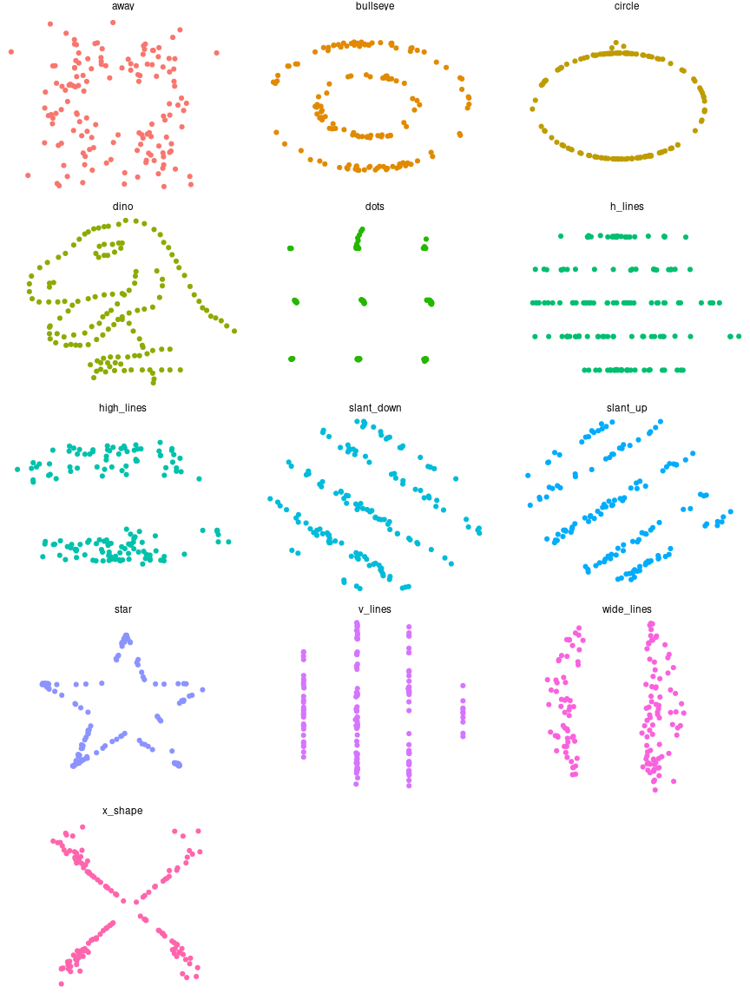

This package wraps the awesome Datasaurus Dozen datasets. The Datasaurus Dozen show us why visualisation is important – summary statistics can be the same but distributions can be very different. In short, this package gives a fun alternative to Anscombe’s Quartet, available in R as anscombe.
The original Datasaurus was created by Alberto Cairo in this great blog post.
The other Dozen were generated using simulated annealing and the process is described in the paper “Same Stats, Different Graphs: Generating Datasets with Varied Appearance and Identical Statistics through Simulated Annealing” by Justin Matejka and George Fitzmaurice (open access materials including manuscript and code, official paper).
In the paper, Justin and George simulate a variety of datasets that the same summary statistics to the Datasaurus but have very different distributions.

Install
The latest stable version is available on CRAN
install.packages("datasauRus")You can get the latest development version from GitHub, so use {devtools} to install the package
devtools::install_github("jumpingrivers/datasauRus")Usage
You can use the package to produce Anscombe plots and more.
library("ggplot2")
library("datasauRus")
ggplot(datasaurus_dozen, aes(x = x, y = y, colour = dataset))+
geom_point() +
theme_void() +
theme(legend.position = "none")+
facet_wrap(~dataset, ncol = 3)
Contributing to the package
Want to report a bug or suggest a feature? Great stuff! For more information on how to contribute check out our contributing guide.
Please note that this R package is released with a Contributor Code of Conduct. By participating in this package project you agree to abide by its terms.